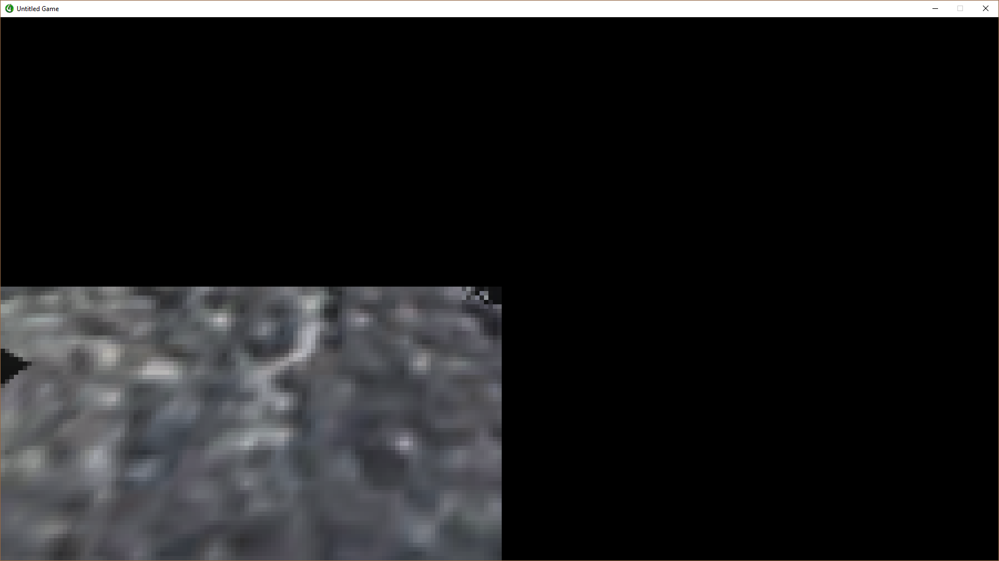

HaeferlKaffee
Changing the size of the depth rendertarget in any technique XML breaks the viewport result. Is this supposed to happen? Is there a better way to resize the depth image, ideally using nearest-neighbour interp?
Example: sizedivisor = “2 2”
